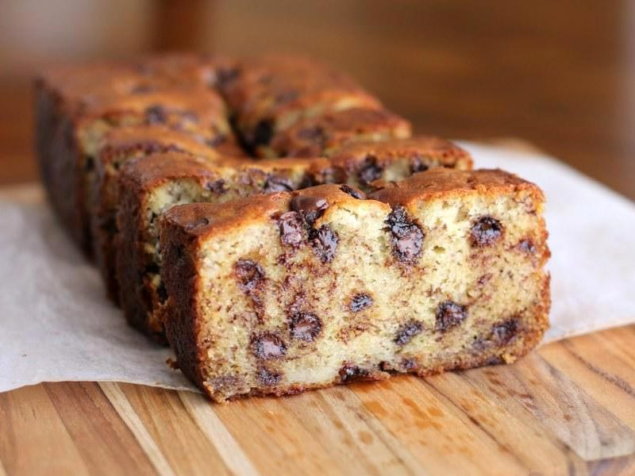

/

Gâteau Banane-Chocolat
Ingrédients
Dans l'ordre de la recette
Ingrédients
Quantité
Oeufs
2
Sucre
100g
Beurre fondu
100g
Farine
200g
Levure
1 paquet ou 11g
Sel
1 pincée
Sucre vanillé
1 paquet ou 11 g
Cannelle
1 cuillère à café
Chocolat pâtissier noir ou au lait
50g
Bananes mûres
3
Préchauffer le four à 180°C/th 6.
Séparez les blancs des jaunes d'oeufs
Dans un grand bol, battre les jaunes d'oeufs avec le sucre.
Ajouter le beurre fondu refroidi et bien mélanger.
Incorporer la farine avec la levure, la vanille, la cannelle et le sel.
Ecraser les bananes et les incorporer au mélange
Concasser le chocolat en petits morceaux de la taille de pépites, puis les ajouter au mélange.
Dans un deuxième récipient, battre les blancs en neige et les incorporer doucement à la préparation.
Beurrer un moule à cake, rond ou rectangulaire; ou bien utiliser un moule en silicone. Y verser la préparation.
Cuire au four environ 40 minutes. Si le four est à chaleur tournante, vérifier la cuisson dès 30 minutes.
A la sortie du four, laissez refroidir puis démouler. Déguster accompagné de glace vanille et de votre boisson chaude préférée.